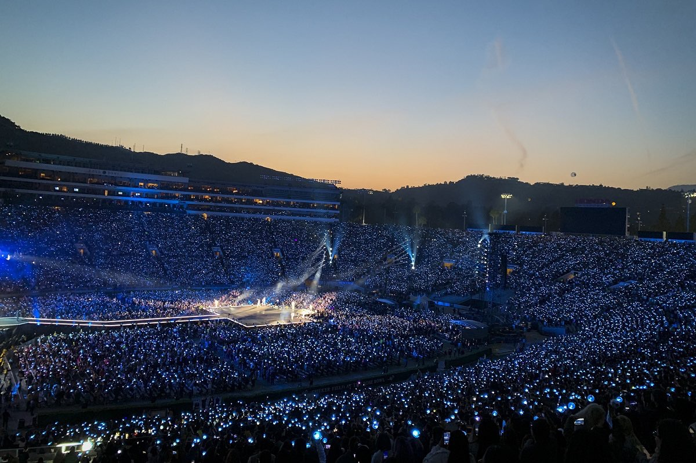

Hi, I am a rising junior in high school from Mountain View, CA. I am Latina, but more specifically half Mexican and half Peruvian. I live at home with my parents and my mini weiner dog, Cloe. I enjoy spending time with my family and hanging out with my friends. When I am not at school, you can find me at home watching youtube videos, watching anime or Kdrama’s on Netflix or reading while listening to music. I would really like to travel more internationally and nationally.
South Korea, Japan, China, Thailand, Mexico, Peru and Italy
Dogs, Music, superhero and comedy movies, Star Wars, BTS, Saiki K., Mexican and Peruvian food
Olives, Country music (I really can’t stand it), feeling awkward, papaya
I've gone on a field trip to Mexico for one week with my entire eighth grade class
